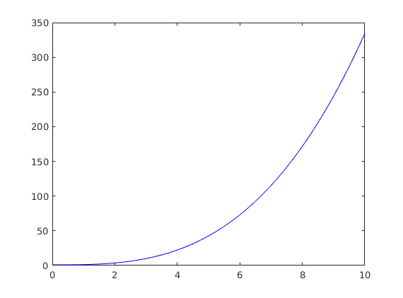

exercise sheet 3 - ordinary differential equations
Contents
Q1ai - y' = x^2 and y(0) = 1
function SolveSimple1()
[x,y] = ode45(@deriv,[0,10],1);
figure
plot(x,y,'b')
snapnow
function dydx = deriv(x,y)
dydx = x^2;

Q1aii
function SolveSimple()
[x,t] = ode45(@deriv2,[0,10],1);
plot(x,t)
function dxdt = deriv2(t,x)
dxdt = (t^2)/x;
snapnow
Q 1aiii
Q 1aiv
function SolveSimple2()
t_range=[0,8];
[t,y]=ode45(@deriv1, t_range, [1,0]);
figure
plot(t,y)
function dydt=deriv1(t,y)
dydt = zeros(2,1);
dydt(1) = -y(2);
dydt(2) = y(1);
Q 1av
SolveSimple1()
SolveSimple2()